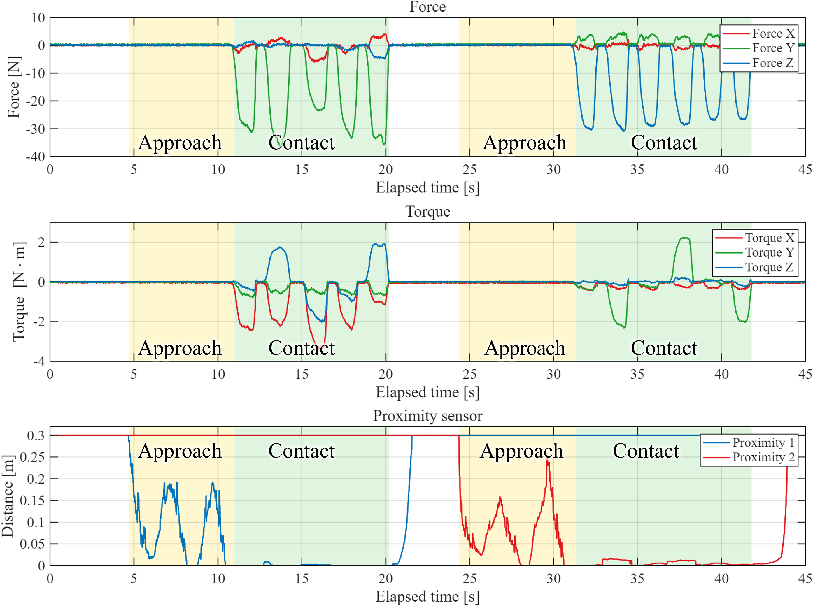

상황에 따라 달라지는 안전 반응
접촉 전에는 피하고, 접촉한 뒤에는 힘을 받아들이는 서로 다른 제어가 필요합니다.
ONGOING RESEARCH · 2026—PRESENT
Reactive Environment-Aware Safety Framework for Avoidance-Compliance Transition Using RMPflow-Based Control
F/T 센서 기반 Intrinsic Contact Sensing과 Proximity Sensor 기반 Avoidance를 RMPflow로 통합하는 연구입니다. 접촉 정보와 근접거리 정보를 함께 활용해 회피와 순응 사이의 전환을 구성하고 있습니다.
Project at a Glance
F/T 기반 Intrinsic Contact Sensing으로 접촉 정보를 얻고, Proximity Sensor 기반 Avoidance로 비접촉 접근에 대응합니다. 두 구성을 RMPflow 안에서 통합해 회피와 순응을 연결합니다.
접촉 전에는 피하고, 접촉한 뒤에는 힘을 받아들이는 서로 다른 제어가 필요합니다.
F/T 기반 Intrinsic Contact Sensing과 Proximity Sensor 기반 Avoidance를 RMPflow로 결합합니다.
Intrinsic 적용 실험과 접촉·비접촉 센서 결과를 바탕으로, 회피에서 순응으로 이어지는 전환 제어를 개발하고 있습니다.
REACT Framework
연구는 F/T 센서를 활용하는 Intrinsic Contact Sensing과 Proximity Sensor를 활용하는 Avoidance로 구성됩니다. RMPflow는 두 구성을 통합하는 제어 프레임워크입니다.

F/T 기반 접촉 정보
근접거리 기반 비접촉 회피
Intrinsic과 Avoidance를 통합하는 제어 프레임워크
Current Experiments
현재 진행 중인 intrinsic 적용 영상과 센서 측정 결과입니다. 접근·접촉 구간에서 힘, 토크, 근접거리 신호의 변화를 확인합니다.
로봇에 장착한 F/T 센서를 활용해 진행 중인 Intrinsic Contact Sensing 적용 과정입니다.

노란색은 Approach, 초록색은 Contact 구간입니다. 위에서부터 힘, 토크, 근접거리를 보여줍니다.
Next Steps
F/T 기반 Intrinsic과 Proximity 기반 Avoidance의 동작을 확인하고, RMPflow 통합 과정에서 회피와 순응 사이의 전환을 다듬을 계획입니다.